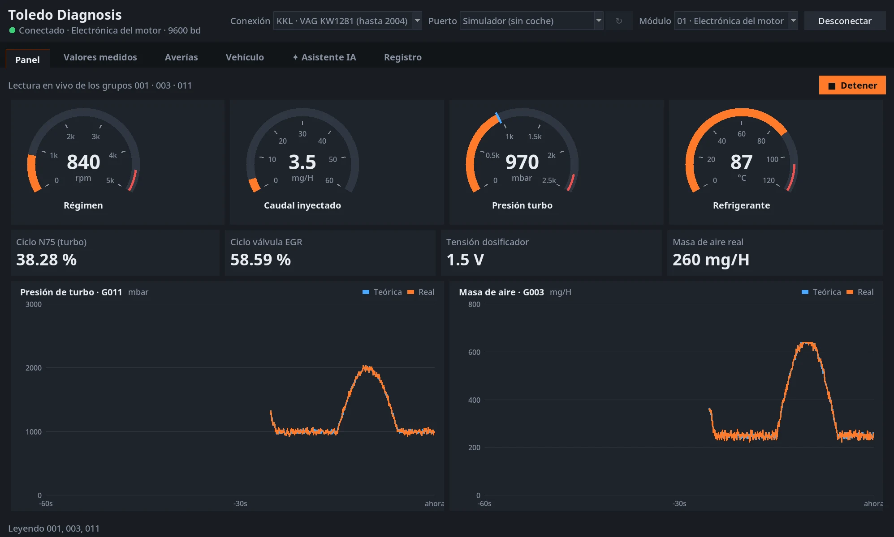
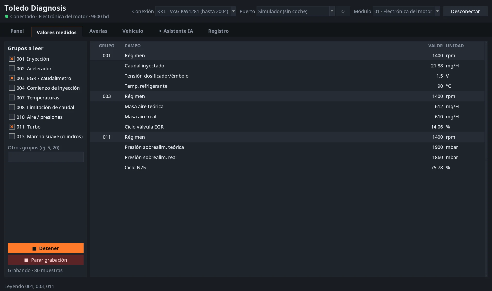
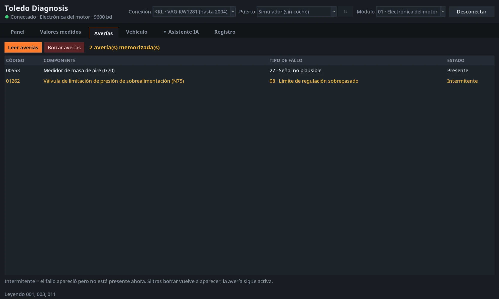
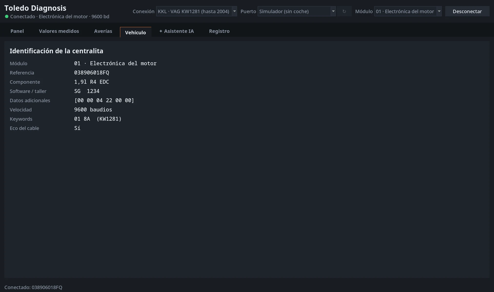
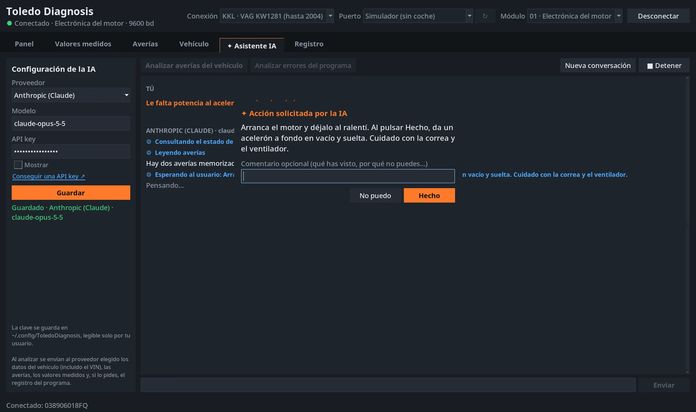
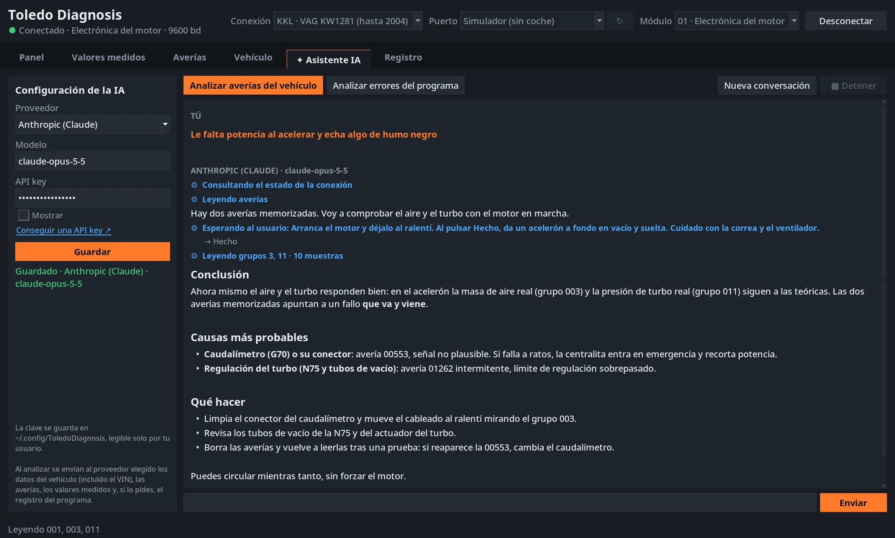

Gratis · Código abierto (MIT) · Windows y Linux
Diagnóstico de tu coche
desde el portátil
Averías, valores en directo y un asistente de IA que hace las comprobaciones por ti. Para VAG antiguos con cable KKL y para cualquier coche con OBD2.
Versión preliminar: probada a fondo con simuladores, todavía no con un coche real. Más detalles.


VAG antiguos por KKL
Habla KW1281, el protocolo de SEAT, VW, Audi y Skoda hasta ~2004, que un lector OBD2 normal no entiende. Pensado para el 1.9 TDI con EDC15.
Cualquier OBD2 con ELM327
Con un ELM327 USB o Bluetooth lee averías P0xxx, el testigo MIL, el VIN y decenas de valores de cualquier coche con OBD2/EOBD.
Un asistente que comprueba
Cuéntale el síntoma: la IA lee ella misma las averías y los valores, te pide que arranques o aceleres y te da un diagnóstico razonado.
Todo lo que hace
Una interfaz oscura y clara, con las mismas pestañas para los dos tipos de conexión. Todas las capturas son del programa real conectado a su simulador.
Panel en directo
Relojes y gráficas de los últimos 60 segundos. Con el cable KKL ves régimen, caudal inyectado, presión de turbo frente a la teórica, masa de aire, ciclo de la N75 y de la EGR. Con un ELM327, régimen, velocidad, temperaturas, carga, caudalímetro, mariposa y tensión.
Valores medidos y grabación
Elige los grupos de valores medidos VAG (001 inyección, 003 caudalímetro y EGR, 011 turbo…) o los PIDs OBD2 que tu coche soporta, y míralos en una tabla en directo.
Grabar CSV guarda cada lectura con su tiempo para analizarla después en Excel o LibreOffice.


Averías
Códigos VAG de 5 cifras con el componente, el tipo de fallo y si es intermitente. En OBD2, averías memorizadas y pendientes con su descripción y el estado del testigo MIL.
Puedes borrarlas (siempre pide confirmación). Recuerda: borrar un código no repara la avería.


Vehículo y otros módulos
Identificación de la centralita (referencia, software, codificación) o, en OBD2, el VIN, el protocolo, la tensión de batería y el estándar.
Con el cable KKL también puedes entrar en otras centralitas: cambio automático, ABS, Climatronic, airbag, cuadro de instrumentos, cierre centralizado y radio.


- Simulador incluido: prueba todo sin coche eligiendo el puerto «Simulador (sin coche)».
- Un solo archivo: no hay que instalar Python ni nada más.
- Registro de toda la comunicación, con modo de depuración, por si algo falla.
- Sesión estable: mantiene viva la conexión KW1281 y avisa si se pierde.
✦ Asistente IA: diagnóstico guiado
No es un chat que adivina: el asistente usa el programa para comprobar sus hipótesis con datos de tu coche.
- 1
Cuéntale qué le pasa
«Le falta potencia al acelerar y echa humo negro». O pulsa Analizar averías del vehículo.
- 2
Comprueba por su cuenta
Lee las averías y los grupos o PIDs que importan, con series de lecturas durante un acelerón o un calentamiento.
- 3
Te pide ayuda cuando hace falta
«Arranca el motor y da un acelerón en vacío». Pulsas Hecho o No puedo y sigue.
- 4
Diagnóstico razonado
Causas por orden de probabilidad con la evidencia, qué hacer de lo más barato a lo más caro y si puedes circular.




Capturas con el simulador. Las lecturas y la ventana de acción son reales; el texto del diagnóstico es un ejemplo de cómo responde.
Proveedores
Claude de Anthropic (por defecto), OpenAI o DeepSeek. El modelo se puede cambiar.
Necesitas tu propia clave de API: Anthropic · OpenAI · DeepSeek.
Coste
Pagas el consumo directamente al proveedor; el programa es gratis. Con Claude, una consulta cuesta céntimos y un diagnóstico guiado de unas 10 comprobaciones, del orden de 0,05 a 0,20 €.
Privacidad
Al analizar se envían al proveedor que elijas los datos del vehículo (incluido el VIN), las averías, los valores medidos y, si lo pides, el registro del programa. La clave se guarda solo en tu equipo.
Qué cable necesitas
Depende del coche. Si es un VAG anterior a 2004 (sobre todo diésel), casi seguro necesitas el cable KKL: muchos no responden a OBD2 genérico aunque tengan el conector.
VAG hasta ~2004 · KW1281
Cable KKL VAG-COM 409.1 con chip FTDI
USB, unos 10-20 €. Conecta a la línea K (pin 7) del conector de diagnóstico.
- Chip FTDI FT232RL/FT232RQ. En Windows, el Id. de hardware debe ser
VID_0403&PID_6001. - Los cables con interruptor de 4 posiciones (Fiat ECU Scan) valen: usa la posición 1 para VAG.
- Evita los chips CH340/CH341 (
VID_1A86) y PL2303: no hacen bien el arranque a 5 baudios. - No sirven los ELM327 con interruptor HS-CAN/MS-CAN (son para Ford) ni se recomienda el «K+CAN Commander».
- Hay FTDI falsos: si el puerto aparece pero no comunica, prueba un driver anterior.
Cualquier coche con OBD2/EOBD
Adaptador ELM327 (USB o Bluetooth)
Gasolina desde 2001 y diésel desde 2003-2004 en Europa. Los hay por menos de 15 €.
- USB o Bluetooth clásico: se empareja en el sistema y aparece como puerto COM (Windows) o
/dev/rfcomm0(Linux). - Muchos clones dicen «v2.1» y son v1.0 incompletos; el programa tolera lo que puede.
- Los ELM327 solo BLE (algunos para iPhone) no funcionan: no crean puerto serie.
- El ELM327 no sirve para KW1281: para un VAG antiguo necesitas el cable KKL.
El conector de diagnóstico suele estar bajo el salpicadero, en el lado del conductor. Una radio no original puede bloquear la línea K: si no conecta, desconéctala para probar.
Descargar e instalar
Gratis y de código abierto. Cada versión está en GitHub Releases.
Windows 10 y 11 (64 bits)
⬇ ToledoDiagnosis.exe- Descárgalo y ábrelo; no hace falta instalar nada.
- Windows SmartScreen avisará la primera vez porque no está firmado: Más información → Ejecutar de todas formas.
- Cable FTDI: pon la latencia a 1 ms en Administrador de dispositivos → Puertos → USB Serial Port → Propiedades → Configuración de puerto → Opciones avanzadas → Temporizador de latencia. Evita cortes de comunicación.
Linux (64 bits)
⬇ Paquete .tar.gzUbuntu 20.04+, Debian 11+, Linux Mint 20+, Fedora, openSUSE, Arch…
tar xzf ToledoDiagnosis-*-linux-x86_64.tar.gz
cd ToledoDiagnosis
./instalar.sh
sudo usermod -aG dialout $USER- El instalador lo añade al menú de aplicaciones, sin sudo.
./instalar.sh --desinstalarlo quita. - Con el último comando das permiso para usar el cable (en Arch el grupo es
uucp). Cierra sesión y vuelve a entrar. - ELM327 Bluetooth: emparéjalo y enlázalo con
sudo rfcomm bind 0 AA:BB:CC:DD:EE:FF.
¿Prefieres el código? Con Python 3.10+ y tkinter: pip install -r requirements.txt y python gui.py. Instrucciones en el README.
Primeros pasos
- 1
Pruébalo sin coche
Elige el puerto «Simulador (sin coche)», pulsa Conectar y, en la pestaña Panel, Iniciar lectura.
- 2
Conecta al coche
Contacto puesto (para leer averías basta con el motor parado). Enchufa el cable al conector OBD y al portátil, elige Conexión y Puerto y pulsa Conectar. Con KKL tarda de 2 a 6 s; con ELM327, hasta 25 s.
- 3
Lee las averías
Pestaña Averías → Leer averías. Apúntalas antes de borrar nada.
- 4
Mira los valores
Panel para el vistazo rápido; Valores medidos para elegir grupos o PIDs y grabar un CSV.
- 5
Pide ayuda a la IA
En ✦ Asistente IA, guarda tu clave, describe el problema y deja que haga las comprobaciones.
Grupos útiles en el 1.9 TDI (EDC15)
| Grupo | Qué muestra |
|---|---|
| 001 | Régimen, caudal inyectado (mg/H), tensión del dosificador, temperatura del refrigerante |
| 003 | Régimen, masa de aire teórica y real, ciclo de la válvula EGR → caudalímetro y EGR |
| 004 | Comienzo de inyección teórico y real (bomba rotativa) |
| 008 | Caudal solicitado y limitaciones por régimen y por masa de aire |
| 010 | Masa de aire, presión atmosférica, presión del colector, pedal |
| 011 | Régimen, presión de turbo teórica y real (mbar), ciclo de la N75 → turbo |
| 013 | Marcha suave por cilindro (si lo soporta) |
Orientativo: los nombres pueden variar según el motor. Las unidades las calcula el programa con la fórmula que envía la propia centralita.
Problemas frecuentes
No conecta con el cable KKL («Sin byte de sincronismo 0x55»)
Revisa que el contacto esté puesto y el puerto sea el correcto. Comprueba que el cable lleve chip FTDI y no CH340, que no sea un FTDI falso y, si tiene interruptor, que esté en la posición 1. Una radio no original puede bloquear la línea K: desconéctala para probar.
Dice «Keywords KWP2000»
La centralita no habla KW1281 sino KWP2000. Prueba con un ELM327 en modo OBD2.
La sesión KKL se corta
En Windows, pon la latencia del puerto FTDI a 1 ms (ver Descargar). En Linux el programa la ajusta solo.
ELM327: «el vehículo no responde a OBD2»
Pon el contacto. Si es un VAG anterior a 2004, probablemente no tenga OBD2 genérico: necesitas el cable KKL.
No encuentro el puerto del ELM327 Bluetooth
En Windows se crean dos puertos COM al emparejarlo: si uno no funciona, prueba el otro. En Linux hay que enlazarlo con sudo rfcomm bind 0 <MAC> y elegir /dev/rfcomm0.
Linux: «Permission denied» al conectar
Tu usuario debe estar en el grupo del puerto serie: sudo usermod -aG dialout $USER (en Arch, uucp) y volver a iniciar sesión. El propio programa te dice el comando exacto.
Linux (Ubuntu/Mint): el cable no aparece como /dev/ttyUSB0
El servicio brltty (para líneas braille) se apodera de muchos adaptadores USB-serie. Si no lo usas: sudo apt remove brltty.
El asistente dice «API key no válida», «sin saldo» o «modelo no encontrado»
Revisa la clave y la facturación en la web del proveedor. Si el modelo no existe, cambia su nombre en la configuración de la IA.
Windows avisa de que el programa no es seguro
Es SmartScreen: el ejecutable no está firmado digitalmente. Pulsa Más información → Ejecutar de todas formas. El código es público en GitHub.
Estado del proyecto
Es una versión preliminar hecha por un aficionado, y prefiero decirte claramente en qué punto está:
- Probado a fondo con los simuladores que incluye: cable KKL con centralita EDC15, y ELM327 con un coche OBD2 simulado.
- El asistente probado con la API real de Claude.
- Probado en Windows y en Linux (Ubuntu, Debian, Fedora, Arch y openSUSE).
- Todavía no se ha probado con un coche real. Puede que haya que ajustar tiempos, alguna fórmula o algún texto.
- La tabla de averías VAG es pequeña: los códigos que no conoce salen con su número.
- Solo lee y borra averías: no hay adaptaciones, ajustes básicos, codificación ni test de actuadores.
Si lo pruebas en tu coche, cuéntame cómo ha ido en GitHub Issues.